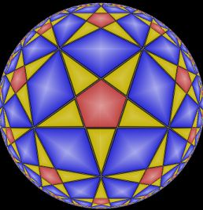

 MAF (pronounced to rhyme with Taff) stands for Monoid Automata Factory. MAF is an open source software package for computation of, and with, finite state automata. These automata usually represent the structure of a finitely presented group (or monoid), or a subgroup of such a group, the presentation being supplied as input by the user. When MAF's computations succeed many questions about the input group, monoid or subgroup can be (and indeed already have been) answered by the files that have been output. A fuller description of these files, and the uses they may be put to, can be found in MAF: An overview. For now we remark only that they provide an effective, and often very fast, means of computing with a group's elements. For example, on a modest PC, it is possible, in much less than one second, to draw a picture of the Cayley graph of an arbitrary hyperbolic triangle group, after first computing, and then using, automata able to enumerate group elements up to any desired word length. But MAF is capable of working with much more challenging groups than this. It has been able to settle, within a few hours, the finiteness question for several presentations, where other methods had not succeeded.
The purpose of this manual is to provide instructions for using MAF as a stand-alone package. It presumes that the reader is familiar with basic group theory, and has a general understanding of rewriting systems and finite state automata.
MAF is a re-implementation and extension, in C++, of Derek Holt's package KBMAG. Most programs from KBMAG have direct replacements in MAF: they can be invoked in the same way, perform equivalent computations, and use the same file formats. By virtue of its compatibility with KBMAG, MAF components can even be used to replace some of the binary components of the KBMAG GAP package, allowing MAF to be used from within the GAP system. Readers interested in using MAF with GAP should refer to Using MAF from within GAP.
Most people who may be interested in MAF will previously have used KBMAG. Anyone who has used KBMAG directly (rather than through its GAP interface) will be able to use MAF straight away. Readers in this position may wish to refer to the Comparison of MAF with KBMAG.
Many of MAF's procedures are based on those in the KBMAG package, but many changes have been made, which it is hoped are improvements. Some of these are described in How MAF works.
MAF is intended to supplement, not as a substitute for, comprehensive computational algebra systems such as GAP and MAGMA. It implements only a small number of procedures. MAF has no facilities for computation with permutation or matrix groups (though it can compute coset tables, which may help one to discover permutation representations). It has no facilities for systematically discovering quotients, or for computing the various types of composition series. It cannot tell you when two groups are isomorphic (though it may well be able to tell you that they are not), and it cannot find the automorphism group of a group. It cannot compute abelianisations using linear algebra. A few of these facilities may be added in future versions of MAF.
Readers who are C++ programmers should note that all the functionality of MAF is also available through a C++ library, which may be useful for programs that need to generate such automata dynamically - for example programs that draw Kleinian group limit sets, or pictures of hyperbolic tessellations. In fact the Cayley graph application described above would require this. With another programming language, one could create suitable input files, and invoke MAF's utilities, but the process would be slower and there would be more code to write.
Most MAF utilities, even the most important, are little more than stub programs that load this library, and then ask it to grow some automata, or load some previously created automata, and to perform some computation using them. Any useful routine contained directly in a utility is likely to migrate in time into the library itself.